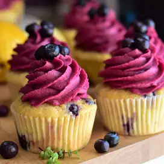

Lemon-Blueberry Cupcakes with Blueberry-Lemon Buttercream Frosting
Description:
Zesty and bright, these cupcakes are sure to wow! A vibrant frosting (flavored with a quick homemade jam) sits atop a lemony, moist cupcake studded with colorful berries. Using frozen blueberries makes these cupcakes accessible any time of year, too!

Here is what the recepie is calls for
Ingredients
Blueberry Jam:
Cupcakes:
Frosting:
Instructions
Combine frozen blueberries, sugar, and lemon juice for jam in a small pot over medium heat; bring to a simmer. Cook, stirring occasionally, until mixture has reduced and thickened, about 12 minutes. Remove from the heat.
Pour mixture through a fine mesh sieve, pressing solids to extract as much jam as possible; you should have approximately 1/4 cup. Discard any solids and refrigerate jam until completely cool, at least 30 minutes.
Preheat the oven to 350 degrees F (175 degrees C). Line 18 muffin cups with paper liners.
Whisk flour, baking powder, and salt for cupcakes together in a small bowl.
Cream sugar and butter together in a large bowl until light and fluffy. Mix in lemon juice, lemon zest, and vanilla until combined. Add flour mixture in 2 batches, alternating with buttermilk, beating batter just until combined after each addition; batter will be somewhat thick.
Place frozen blueberries in a small bowl and toss with flour until coated. Add to the batter and fold to incorporate. Spoon batter into the prepared muffin cups, filling each one 3/4 full.
Bake in the preheated oven for 20 minutes. Check to see if a toothpick inserted into the centers comes out clean, and continue to bake, if needed, for 4 to 8 more minutes. Cool in the pans for 5 minutes before removing to a wire rack to cool completely, about 20 minutes more.
While the cupcakes are cooling, remove blueberry jam from the refrigerator. Measure out 1/4 cup for the frosting and reserve any extra for another use.
Beat butter for frosting in a large bowl until creamy and smooth. Add 1 cup powdered sugar, lemon zest, lemon juice, and salt; beat until thoroughly combined. Add 1/4 cup blueberry jam and mix until combined. Add 1 cup powdered sugar and mix until smooth. Repeat with remaining 1 1/2 cups powdered sugar. Add heavy cream and beat until frosting is smooth and fluffy, 1 to 2 minutes more.